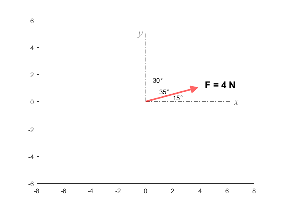
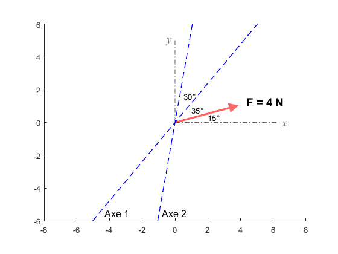

Oblique1
Tracé des axes, du vecteur et des obliques
mF = 4; % norme de F (N) angleF = 15; % angle de F en degrés angle1 = 50; angle2 = 80; % angle de chaque ligne
définition des couleurs
gris = [0.4,0.4,0.4]; rouge = [1,0,0]; vert = [0,0.7,0]; bleu = [0,0,1]; % Tracé des axes des x et des y Cloture = [-8,8,-6,6]; % [xmin, xmax, ymin, ymax] axis equal; axis(Cloture); hold on; x = 6.2; y = 5.1; % coordonnées de fin des axes plot([0,x],[0,0],'Color',gris,... 'LineStyle','-.','LineWidth',0.5); plot([0,0],[0,y],'Color',gris,... 'LineStyle','-.','LineWidth',0.5); text(x,0,' x','FontName','Times New Roman',... 'color',gris,... 'FontAngle','italic','FontSize',14); text(0-0.5,y,'y','FontName','Times New Roman',... 'color',gris,... 'FontAngle','italic','FontSize',14); % Définition et tracé du vecteur *F* nF = [cosd(15),sind(15)]; % vecteur unitaire F = mF*nF; % vecteur F (N) Vecteur(Cloture,F,[0,0],rouge); text(F(1)+0.5,F(2)+0.2,'F = 4 N','FontWeight',... 'bold','FontSize',14); text(2,0.3,'15°'); text(1,0.75,'35°'); text(0.5,1.6,'30°')

Tracé des lignes
Les extrémités des lignes sont posées à l'extérieur de la clôture de la figure et l'excédent est automatiquement coupé à la clôture.
vecteur unitaire de chacune
n1 = [cosd(angle1),sind(angle1)]; n2 = [cosd(angle2),sind(angle2)]; diagonale = norm(Cloture); L1a = -n1*diagonale; L1b = +n1*diagonale; L2a = -n2*diagonale; L2b = +n2*diagonale; L1x = [L1a(1),L1b(1)]; L1y = [L1a(2),L1b(2)]; L2x = [L2a(1),L2b(1)]; L2y = [L2a(2),L2b(2)]; % L1x=[-5,+5]; L1y=[-5,+5]; % L2x=[-1,+1]; L2y=[-5,+5]; line(L1x,L1y,'Color',bleu,'LineStyle','--',... 'LineWidth',1); line(L2x,L2y,'Color',bleu,'LineStyle','--',... 'LineWidth',1); text(-4.3,-5.5,'Axe 1',... 'FontWeight','normal','FontSize',12); text(-0.8,-5.5,'Axe 2',... 'FontWeight','normal','FontSize',12);
